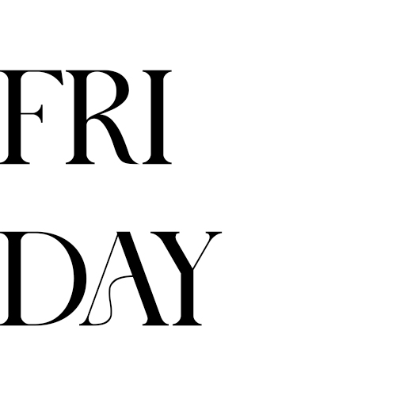

Week 7
Daily Standups:

9th June 2025
What did I do today?
Today was a production day, so we didn’t have class, just time to work on our projects. We had a check-in where I asked a few questions about my style guide, which got answered and helped clarify things. I also had a mentoring session with Simon. He gave me some positive feedback, which was reassuring. He said I’m at a good point in my project, and that things are tracking well.
We also talked about the coding component. I’d originally planned to code a marketing website for my app, but Simon pointed out that, because I don’t have a prototype designed for the website, it would make more sense to code the app itself, especially since I already have a HiFi prototype of it in Figma.
That shift in direction initially felt overwhelming. I realised I hadn’t properly thought that plan through, and it caught me off guard. But after a breather and a coffee, I sat down and designed the first screen, and it actually worked. That small success really helped ease the stress, and now I’m feeling a lot more confident about coding the rest. It might not be the “perfect” approach, but it’s working for me, and that’s what I’m choosing to focus on.
Were there any blockers?
Mainly my mindset. I’m feeling tired and a bit burnt out, which makes it easy to spiral into self-doubt. I’m trying to keep my perspective in check and stay positive, but it’s a bit of a struggle at the moment.

10th June 2025
What did I do yesterday?
Yesterday I started working on coding my app. Simon had suggested it would be a better focus than building a marketing website, since I already have a HiFi prototype for the app. It felt a bit overwhelming at first, but once I got into it, things started coming together and it went better than I expected.
What will I do today?
Today I’ll be travelling for work. I’m driving to Tauranga in the morning to do a delivery, then heading back up to Hamilton to photograph some of our installed structures for Fieldays. I’ll be overnighting in Hamilton and attending the first live day of the event tomorrow. I’m taking my laptop with me and will try to get some uni work done while I’m away, but realistically I don’t expect to make much progress over the next couple of days.
Are there any blockers?
Work is definitely taking up most of my time at the moment, so it’s a blocker in terms of getting uni work done. That said, being at the event and seeing everything we’ve worked on finally come to life is actually really uplifting. I’ve been feeling a bit bummed out lately, so this feels like a much-needed reminder that hard work does pay off. Even if I can’t get much uni work done, it’s still a positive experience.

11th June 2025
What did I do yesterday?
I dabbled a bit with coding my app but didn’t get very far. Between travel and work commitments, there just wasn’t much time to properly focus.
What will I do today?
I’ll try to fit in some uni work if I can, but realistically, with attending the event and then travelling back to Auckland, it’s unlikely I’ll get much done.
Are there any blockers?
Not really, though work is taking up a lot of my production time this week.

12th June 2025
What did I do yesterday?
I went to Fieldays and then travelled back to Auckland. I was pretty tired when I got home, so I didn’t manage to do any uni work.
What will I do today?
Today I’m aiming to get as much of my coding done as possible. I’m also planning to work over the weekend, if needed, to catch up and stay on track. I want to make a start on my presentation slides and go through a checklist of everything needed for submission, just to make sure I’m feeling organised and prepared for next week, which I expect to be quite hectic.
Are there any blockers?
I’m feeling pretty tired after the past couple of days, so that’s definitely a blocker in terms of energy levels. But going to the event has also given me a bit of a boost, and I’m feeling more motivated to push through. Less than a week and a half to go now, and then the project will wrap up. It’s just about holding on and keeping that momentum going.
13th June 2025
What did I do yesterday?
Yesterday I focused on coding my app and made progress on some of the key screens. I also began prepping content for my submission and started thinking through the structure of my final presentation.
What will I do today?
I have a doctor’s appointment this morning, and I’ll be taking the rest of the day off for personal reasons, so I won’t be doing any university work today.
Are there any blockers?
No blockers, just taking intentional time off to rest and reset before the final stretch.
Retrospective:
What went well?
- • I made a solid start on coding my app, even though the direction changed partway through the week.
- • My mentoring session with Simon gave me clarity and reassurance about how the project is tracking.
- • Despite being away for work and dealing with a busy schedule, I managed to stay connected to the project and made meaningful progress.
- • Work commitments took up a large portion of the week, which limited the time I had to focus on university tasks.
- • The change in direction from building a marketing website to coding the app itself initially felt overwhelming and disrupted my momentum.
- • My energy levels were inconsistent, and I found it hard to stay focused during the middle of the week.
- • I need to protect more focused time for working on the final coding and presentation tasks, especially with the deadline coming up.
- • Be mindful of my energy levels and take intentional breaks to avoid burnout in the final lead-up to submission.
What didn’t go well?
What can be improved?
What will I try next week?